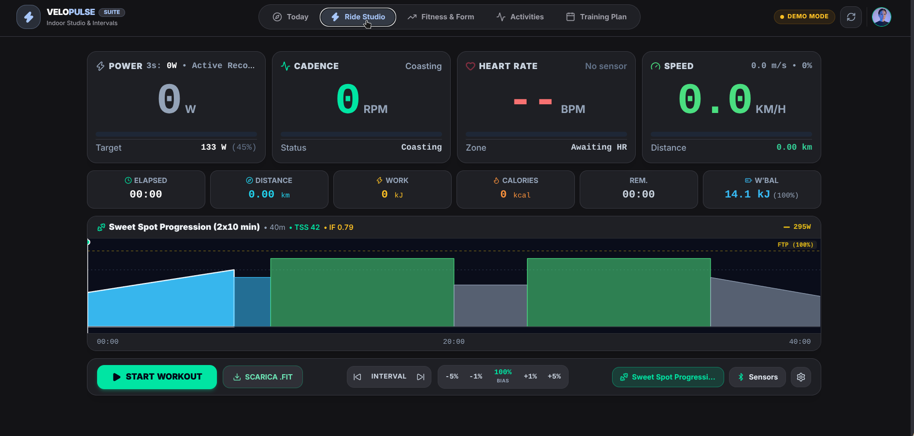
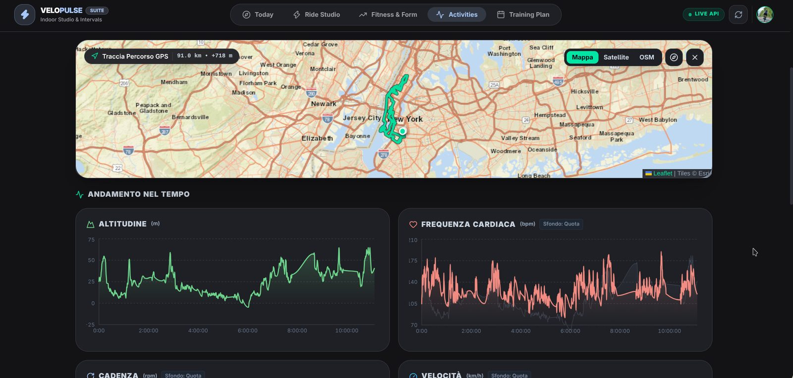
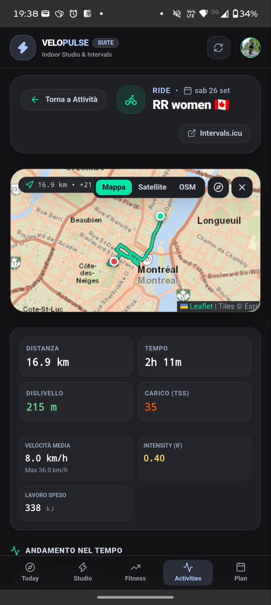
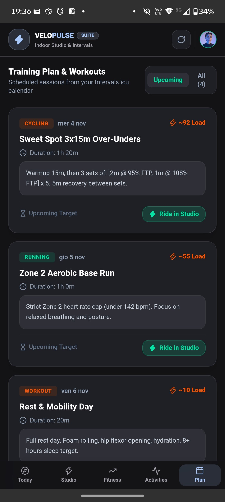

Bluetooth sensors
VeloPulse reads your smart trainer (FTMS), power meter, cadence sensor and heart rate strap in real time.
Indoor training studio + performance analytics
VeloPulse brings together an indoor cycling training studio and the performance analytics of Intervals.icu. Connect the Bluetooth sensors on your trainer, ride a workout and watch your fitness change over time.

Indoor training
Connect the Bluetooth sensors on your trainer: VeloPulse takes care of the rest of the workout.
VeloPulse reads your smart trainer (FTMS), power meter, cadence sensor and heart rate strap in real time.
During an interval workout, VeloPulse sets the target power on the trainer for every step by itself.
Load a Zwift workout file (.zwo) or pick one of the ready-made workouts in the app.
With no trainer connected, the simulator still lets you ride a workout.
A physics engine works out speed and distance from the power you put down, like a workout on the road.
Every session creates a .fit file, ready to upload to Strava, Garmin Connect or Intervals.icu.
While you ride, VeloPulse shows live how much anaerobic reserve (W') you have left, so you can manage efforts above threshold.
The activity page
Every activity has a page with the GPS route map and charts over time for elevation, heart rate, power and cadence. Next to them you find the time spent in each zone and aerobic decoupling, that is how much your heart rate drifts up at constant power.
The highest power you can hold for a long time before you have to ease off.
How much energy you can spend above critical power before you run out.
VeloPulse estimates CP and W' from the power curve that Intervals.icu builds from your activities.

Fitness analytics
VeloPulse works out your fitness and your fatigue and shows how you recover between workouts.
CTL (fitness), ATL (fatigue) and TSB (form) tell you how much load you have built up and how ready you are to push.
A recovery ring based on heart rate variability (HRV), resting heart rate and sleep.
VeloPulse tracks sleep stages, heart rate variability (HRV), estimated VO2max and resting heart rate over time, with the data that comes from Intervals.icu.
Your athlete data comes from your Intervals.icu account through the API key, or from demo mode.


Where it runs
VeloPulse works on the web and as an installed app.




On a phone, a tab bar at the bottom takes you to Today, Studio, Fitness, Activities and Plan.
In three steps
Use VeloPulse from your browser, or install the app for your system.
Connect your trainer and the Bluetooth sensors, or use the simulator to ride a workout without any hardware.
Enter the API key of your Intervals.icu account to see your own data, or use demo mode with sample data.